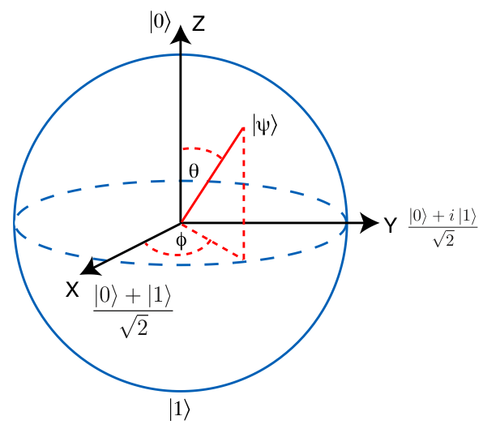

QUANTUM
COMPUTATION
Throughout our everyday lives we are exposed to computation on a massive scale. Everyting from the phone in your pocket to the supercomputers of industry like Google. But there is one significant aspect that ties all of these together... and that is that every bit of information can and is represented by a sequence of 1's and 0's.
Although that may not seem problematic, it does have a big drawback. Consider conventional memory of 11 bits, this stores one binary number up to 2047. Now compare that to a register of 11 qubits, which stores all of the numbers from 0 to 2048. Now that is a huge improvement.
Now that we have our all-mighty qubits, we need a way to represent them, and also more specifically a way to visualise changes that occur on them. Low and a behold such a device exists! Utilising what is known as the Bloch Sphere to represent qubits as a 3-dimensional vector in Hilbert space... That was probably quite a mouthful, so rather than speaking mathematical gibberish lets take a look at this sphere.
The principle behind the Bloch Sphere is that we have the poles at the top and bottom represent a complete 1 state (up) and 0 state (down).
We write these in Bra-Ket notation |1> and |0>. But because we are talking quantum bits, we can represent more than just 1 and 0, rotating the position
on the sphere by 180 degrees we get a superpositon between the two, written as: |Ψ> = ½|0> + ½|1>. This shows that the state (when measured) has a
50/50 chance of being 1 or 0, as shown by the coefficients of |0> and |1>. Changing the positon of |Ψ>, represents different states.
Each of which is related to the values of theta (θ) and phi (φ).
Both quantum gates and classical gates are logic gates, they compare binary conditions for an output. However, quantum gates leverage two important elements of quantum mechanics for some pretty spectacular effects; entanglement and superposition. These concepts allow quantum gates to utilise their full potential of many states inside just a single qubit.
A particularly notable result is that quantum gates are reversable. This basically means that any change made by a gate, when run through that gate again undoes that change. Let's take a look at some of these gates.
First up are the Pauli gates (named after Wolfgang Pauli): X, Y and Z. The X gate is basically the equivalent of a not gate, or logical negation. It
takes a qubit such as |1> and flips it to |0>. Think of it as a rotation around the x-axis of the Bloch Sphere.
Y and Z gates are similar by apply rotations to the y and z axis of the Bloch Sphere. Their matrix representations are as follows:
One of the most important gates in quantum computing is the Hadamard. This gate is the basis of almost every uniquely quantum algorithm
that exists. It's purpose it to take a state such as |0> and create a superpositon of its possible states: |Ψ>=|0>+|1>.
This is quite a difficult concept to wrap your head around, the illustration of the opetation on the Bloch Sphere below should give you a better idea.
Note: There are even more gates than are listed here, if you want explore them check out the wikipedia page
https://en.wikipedia.org/wiki/Quantum_logic_gate
In 1981, Richard Feynman proposed for the first time, a new type of computer. A quantum computer. Algorithms created for a quantum computer would exploit the unique non-classical systems on which they are built, allowing them to process extrordinarily large quantities of data in polynomial time.
A well known, if not the most well known, algorithm used in quantum computing is Peter Shor's algorithm for prime factorisation in polynomial time*. This algorithm presents a problem for public-key cyptography, such as the RSA algorithm, due to the fact that they depend on large primes. Shor proved that implementing his algorithm on a quantum computer would be unprecidented in speed as opposed to the enourmous amount of time to run it classically.
Essentially the algorithm utilised the QFT (Quantum Fourier Transform) to run to find the period of a function on x. It does this but having a superposition of all function variations at once, the ones that dont lead to an answer interfere destructively and the ones that lead to an answer constructively interfere. We use this to find the period of the following function: From the result, we can derive that the factors of N are:
Another well known algorithm is for super-dense coding and transmittion of bits via entanglement. The algorithm goes like this; Alice and Bob share a pair of entangled qubits, Alice wants to send two classical bits to Bob. To achieve theis, they must adhere to a protocol:
Below is a table showing each of the possible transfers done with the two entangled qubits.
| Tranferred Bits | Alice's Operation | Resulting Two-Qubit State | Bob's Measurement |
|---|---|---|---|
QComp.js is a JavaScript library that I built to simulate quantum computing, more specifically qubits and quantum gates. The basic idea is that you initialise a new quantum register with bit values as an string argument (either Bra-Ket notation or just numbers), for example:
const qc = new QC("|01101>");
Then you apply your algorithm as a series of gate calls on qc. As an example, we will use a Pauli-X gate on bits 0 and 1 and then a Hadamard gate on
bits 2 and 3. Putting this inside a log(); command to display it in the result section:
log(qc.X([0,1]).H([2,3]).getValues());
The resut of this series of operations is:
As an example of gate reversal, lets apply the Hadamard to bits 2 and 3 again:
log(qc.H([2,3]).getValues());
And there we go! we have the same result as if you were to just apply the Pauli-X to bits 0 and 1 (You may get some rounding errors; 0.9 recurring instead 1).
The full spec sheet for QComp.js can be found here, it's a good idea to read this before you start coding!
There is an in-browser JavaScript IDE and interpreter below which you can use to test out this library, if you want to get a copy of the library itself, there is a link to the GitLab repositsory where you can download it.
Note: You can change the IDE theme by clicking on the cog icon in the top right of the result panel.
Result: